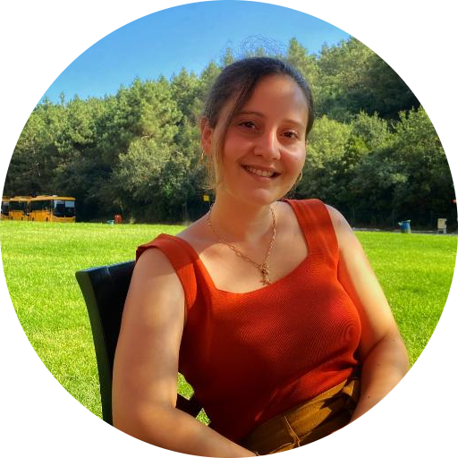

|  |
Elifnur Sezen
Computer Engineer
I am a new graduate of the 2021 Spring semester from Yeditepe University Computer Engineering Department.
I want to improve myself by gaining new knowledge and gain experience in a company.
I also aim to do a
master’s degree in my field later. I completed my internship at Berkut Technology company by working in the
Web Technologies department and contributing to the Web Development projects.
|
Personal Information
Date of Birth: 16.09.1999
Place of Birth: Istanbul/Turkey
Marital Status: Single
Contact Me ✉
Education
Work Experience
| Dates |
Work |
| 2021 |
Internship on Berkut Technologies |
| 2020 |
Business Development Assistant on Berkut Technologies |
| 2019-2020 |
Coaching for two students in Secondary School in Maths |
Seminars and Courses
Scholarships and Projects
- Computer Science B.Sc. Scholarship in Yeditepe University between 2017 and 2021.
- A Query Interface for Survey Data – Engineering Project for Graduation in 2021 Spring Semester.
- A database query interface tool requested by Yeditepe University quality people to make analyses with Lecturer Evaluation survey data.
- Making queries based on the user requests with a fast and accessible user-friendly platform.
- Providing productivity to handle such a large amount of survey data.
- Theme and Plugin Development for a nopCommerce Website in Berkut Technology in 2021.
- Berkut Technology Web Page Development Project in 2020.
- CSE 344: Software Engineering/Term Project: Design & Implementation a game "Pile On" in Unity by working with Visual Communication Design group.
- CSE 331: Operating Systems/Term Project: Design & Implementation a System Call and a Scheduling Mechanism on Kernel.
- CSE 224: Introduction to Digital Systems/Term Project: Design & Implementation a Very Simple CPU.
- CSE212: SOFTWARE DEVELOPMENT METHODOLOGIES/Term Project: Racer Game Newcomer Award with Java.
Foreign Languages
- Turkish (native speaker)
- English (advanced level)
- German (beginner level)
Computer Skills
Certificates
- W3Schools HTML, CSS and Javascript Tutorial Completion Certificates in 2020.
- Udemy 2D Unity Course Completion Certificate in 2020.
- Udemy Drone Programming Course Completion Certificate in 2019.
- Sabancı University Summer School in 2015.
Associations
Additional Information
Driving License: B Class
Personal Website: eldiszn.wordpress.com
Personal Articles:
My Hobbies
References
- Esin Onbaşıoğlu:
Virtual Reality Specialist,
Yeditepe University Phone: +90 216 578 0422,
Email: esin@cse.yeditepe.edu.tr
- Berk Özel:
General Manager of Berkut Technology,
Phone: +90 555 564 6345,
Email: berk@berkut.tech